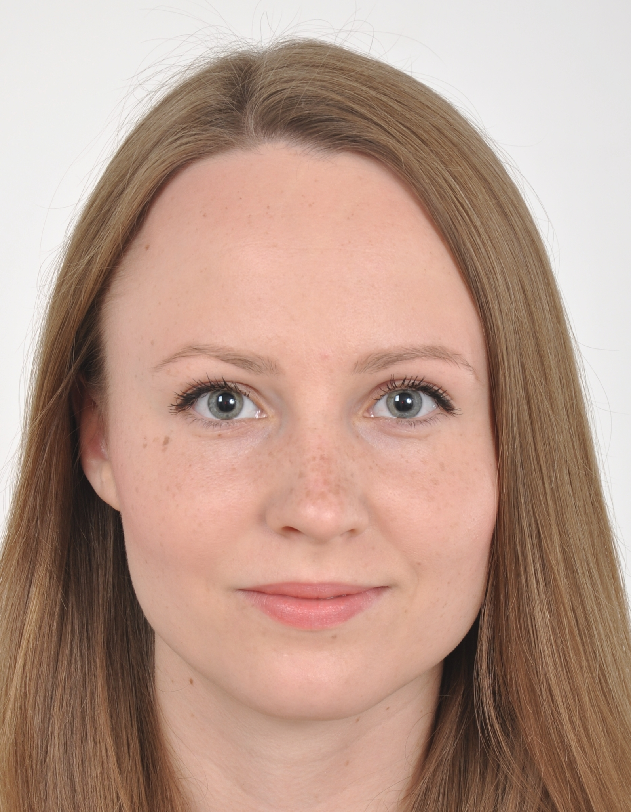

| Interaktywna mapa atrakcji turystycznych miejscowosci Jaworki |
|
|---|
| Interaktywna mapa atrakcji turystycznych miejscowosci Jaworki |
|
|---|
|  |
Daria Andrzejewska Studentka Wydziału Nauk Geograficznych Uniwersytetu Łódzkiego Kierunek: Geoinformacja Promotor: dr hab. Iwona Jażdżewska, prof. nadzw. UŁ |
|---|